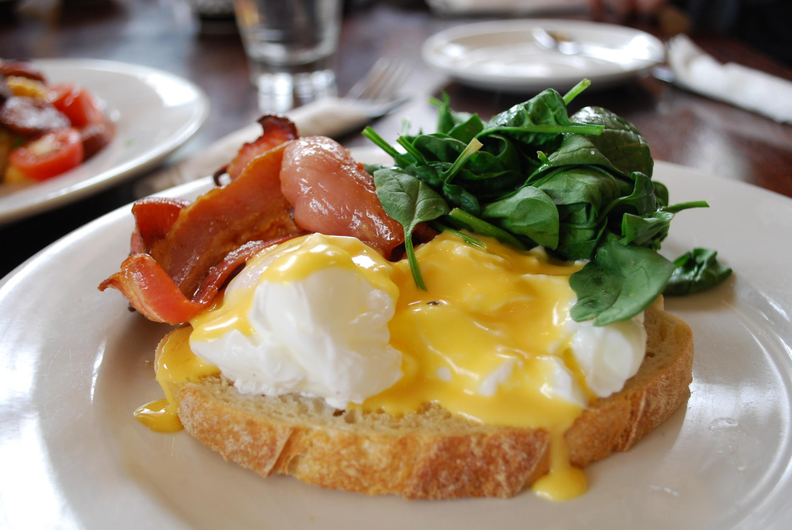

Bacon Benny

Ingredients
- 2 large eggs
- ¼ cup heavy cream
- 1 tablespoon white sugar
- ¼ teaspoon ground cinnamon
- ⅛ teaspoon ground allspice
- 1 pinch kosher salt
- 1 pinch cayenne pepper
- 4 thick slices day-old French bread
- 1 tablespoon butter
- 8 thin slices cooked ham
- 4 slices Cheddar cheese
- 4 slices Havarti cheese
- 8 poached eggs
- 2 teaspoons chopped fresh chives, or to taste
- 1 pinch kosher salt, or to taste
- 1 pinch cayenne pepper, or to taste
Directions
- Preheat the oven to 375 degrees F (190 degrees C).
- Whisk 2 eggs, cream, sugar, cinnamon, allspice, 1 pinch salt, and 1 pinch cayenne pepper together in a bowl until thoroughly combined.
- Lay bread slices, one at a time, into egg mixture; let bread absorb mixture. Flip bread slices; let bread absorb mixture until almost all mixture has been absorbed, about 10 minutes.
- Heat a large skillet over medium heat; add butter and let melt. Add bread slices; cook until browned, 2 to 3 minutes per side. Transfer French toast to a baking sheet.
- Add ham slices to the skillet; cook until begins to brown, about 1 minute per side.
- Place 1 slice Cheddar cheese on 1 slice French toast, top with 2 slices ham, and top ham with 1 slice Havarti cheese. Repeat with remaining Cheddar cheese, French toast, ham, and Havarti cheese.
- Bake in the preheated oven until French toast slices are no longer wet, batter is set, and cheeses have melted and begun to brown, about 20 minutes.
- Place sandwiches on serving plates; top each with 2 poached eggs and chives. Season with 1 pinch salt and 1 pinch cayenne pepper.